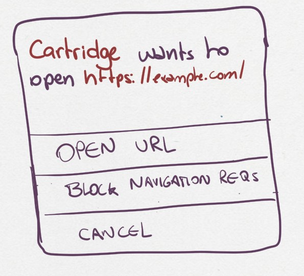
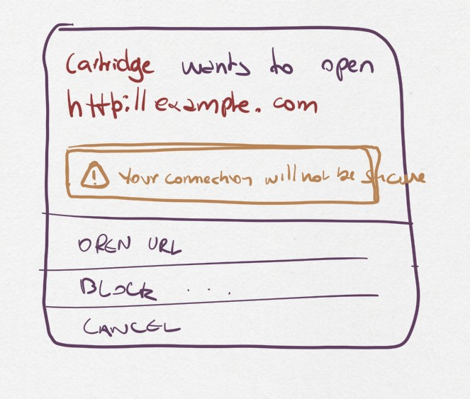

#A0002 — External URL navigation#
- Author:
Niini
- Started:
2023-06-25
- Last updated:
2023-07-23
- Status:
PoC in progress
Timeline#
First draft |
Proof of Concept |
Stable implementation |
|---|---|---|
2023-07-15 |
— |
— |
Summary#
Kate’s cartridges are sandboxed and have no internet connection. This is done to protect players’ privacy and allow them to run unvetted cartridges with little risk—there are few attacks that are truly interesting when the cartridge cannot do anything other than pure computation.
However, to be useful for the player, cartridges may contain links to external websites. For example, a cartridge might want to link to its developers’ profile in a credits screen, or provide a help page online.
In these cases Kate should support cartridges to open external URLs while maintaining a baseline of privacy and security guarantees for the player.
Technical implementation#
Here we want to introduce a new API, Browser, which provides a function
to load an external URL. This URL is always opened in the user’s default
browser window, with enough security and trust indicators to allow them
to make an informed choice about what page they’re navigating through. It
must also make it clear that the user has left Kate’s own security boundaries
and guarantees.
The API definition is as follows:
interface Browser {
async open_url(url: URL): Promise<void>;
}
And its semantics are as follows:
Check if we’re allowed to ask the user to open a URL;
If the cartridge does not have a
Open URLscapability: reject the request;If the cartridge has a pending
Open URLrequest: reject the new request;If the cartridge is not active and in the foreground: reject the request;
The URL must have a known trusted protocol. We support HTTP and HTTPS;
The URL must not have inline authentication details;
Let the Display URL be a shorter version of the URL that fits in under 100 characters, and uses punycode and URL encoded notation for non ASCII parts;
Ask the user confirmation for opening the URL by showing the cartridge making the request and the Display URL;
If the user consents, open the URL in a new browser window, in a new browsing context, with no referrer.
Store the request and its outcome in the audit log;
If the request is rejected, store at most 5 URLs during a session, and combine all requests within a time window.
Whether the request completes or is rejected, the promise should always be fulfilled with no value; the user’s decision of following the URL or not should not be leaked to the cartridge.
Note that this whole process is just about informing the user what URL is going to be opened, because cartridges are not forced to display this to the user before calling the API with an arbitrary URL. For actual security we still rely on the browsers’ sandbox and OS defence mechanisms (e.g.: tainting downloaded streams).
Issues with URL navigation#
Kate blocks all internet connections from a cartridge by default, and also any navigation (even internal). This ensures that once a cartridge is loaded, it is unable to exfiltrate data, modify its content in ways that cannot be vetted, or perform attacks that consist of tricking users into navigating to a malicious website which poses as a known one.
However there are valid use cases where a cartridge (or Kate itself) might want to let the user open a different page. For example, the cartridge might have links in its help or about page that point to a documentation page, or to a developer’s profile. There might be requirements on this for asset usage.
Allowing these URLs to be open makes Kate less safe in the following ways:
Blurred security boundaries#
Kate itself is a web application. It should never load external URLs within its own web view. Doing so blurs the clear boundaries it traces between verifiable content and unverifiable content.
A different approach is to always open the links in a separate browser window. This signals to the user that such URL is entirely unrelated to Kate, and regains the clear distinction between what constitutes the Kate OS and its contents; and what’s external to it and thus not subject to the same security and privacy guarantees.
State and browser issues#
Besides not having enough information for informed consent, users also have no control over what information they will share with the target page.
For example, a cartridge that collects user data might include that data in the URL to send it to some external website, even when that wasn’t what the user expected when clicking a link.
Or, if we open a page in a domain the user trusts, but the page is not controlled by the same trusted entity, an attacker might be able to escalate their privileges. The same goes for malicious pages that might exploit browser bugs to gain more information than the browser intended to provide. Browsers have very complex machinery, particularly when running JavaScript, and are frequent sources of bugs such as JIT Type Confusion which allows web sites to escape the sandbox they’re placed into and run arbitrary code with more privileges.
Or a cartridge may link to a domain that, at the time it was published, belonged to a trustworthy entity. But as time went on the domain expired and was purchased by someone with less-than-charitable intentions; resulting in the cartridge now linking to an actively harmful website.
All these issues are outside of Kate’s control, but we should consider ways of mitigating the damage they may cause nonetheless.
How is this feature dangerous?#
Though the previous section provides an informal write-up of the many threats one may encounter with external URLs, this section is more technical and follows the general format of Kate’s threat documentation.
- Blurred Kate/External boundary:
Because Kate is itself a web application, there’s a risk that opening an external URL will provide little guidance to the users in that such content is not part of Kate, and the user must reassess the risk of using it independently.
We mitigate this by not allowing external URLs to open in the same window Kate uses. All external URLs are opened in a new window or in a new tab, using the user’s current or default web browser.
- Lack of feedback about navigation:
Kate is primarily a gaming console, and most games are not written using web technologies. For example, a game engine like Ren’Py directly uses Window.open to be able to navigate to links. A user is, then, not informed that they’re about to navigate to an external resource, like they would be hovering a link in a regular webpage.
We mitigate this by showing users a message indicating that they are about to navigate to an external resource. This is similar to the approach other platforms with significant risk of phishing attacks take.
- Security scare fatigue:
Because Kate shows a message indicating that the user is navigating to an external resource, there’s a risk, based on the frequency of these alerts and the pay-off perceived, that users will treat these as useless security scares and end up trained to click “Take me to the malicious website” without reading or performing any needed risk assessment.
Due to the risk of data exfiltration, and the requirement of a transient action from the browser side, Kate chooses to not mitigate this.
- Navigating to a malicious website:
Because neither Kate nor the user can realistically know if the target website contains malicious code or not, there’s a risk that by following a link the user has their digital accounts or device compromised.
We don’t mitigate this in Kate, but rather rely on the user’s browser and OS to perform the active mitigation of known malicious targets (e.g.: by keeping a deny-list or tainting downloaded executables), and sandboxing malicious content to mitigate the potential damage.
- Homoglyph attacks:
Because Kate tells users what website they’re about to visit, it’s possible that a malicious cartridge may try to trick users into believing they’re visiting a trusted website when in reality they’re visiting a malicious one.
We partly mitigate this by showing domains using only ASCII characters in a font that is known to have distinctive glyphs for all characters (e.g.: “O” (the uppercase letter O) and “0” (the digit zero) have distinct symbols, as do “I” (the uppercase vowel I) and “l” (the lowercase consonant L)). And we rely on the browser to provide further mitigation in the address bar and with filters to warn users of known phishing attacks.
- Redirection attacks:
Because Kate may receive any URL to open, a malicious cartridge might hide a malicious URL under a more trusted redirect (e.g.: the URL shortener many social network websites use), in which case the user may end up opening a webpage that’s not what they expected.
We cannot mitigate this. Because Kate generally runs as a regular webpage, it has no way of connecting to the server at the other end to figure out where it redirects to — and even if it did, the server might behave differently regarding redirections if it’s reached by a Browser agent, depending on the cookies it’s given, etc.
Instead, we rely on the trusted redirect service and the browsers’ own defenses against malicious URLs to provide at least some protection against well-known forms and targets of this attack.
- Long domain attacks:
Because Kate has limited physical screen space to tell the user about what website they’re navigating to, a malicious cartridge may choose an intentionally long domain or pathname in the hopes that what the user sees misleads them into thinking they’re visiting a trusted domain. E.g.:
https://accounts.google.com.definitely-absolutely-not-at-all-malicious-domain.invalid/logincould risk displaying onlyhttps://accounts.google.com...because the name is otherwise too long to fit in the screen.Kate mitigates this by always attempting to show the entire domain, if it can fit the screen, and otherwise indicating that it’s not showing the entire domain. In this case the link could be shown as:
https://accounts.[44 characters omitted]malicious-domain.invalid/login. The44 characters omittedpart must be shown in a different font, which indicates that it’s not part of the actual domain name, but Kate’s own URL shortening, to mitigate further attacks. Hovering the URL should always display the complete domain.- Unicode control character attacks
Because Unicode contains control characters, which have no display but change how text is rendered, it’s possible for an attacker to trick users into believing they’re visiting a trusted site by carefully manipulating how the actual URL is rendered.
For example:
https://kate.qteati.me/resu_detsurtis rendered ashttps://kate.qteati.me/trusted_user, but in reality contains the URLhttps://kate.qteati.me/[U+202E]resu_detsurt[U+202C]with a clever use of “render this portion of the text right-to-left”.Kate will never show non-ASCII characters when presenting the URL. Unicode characters should either be converted to their punicode format or be percent-encoded. That is, when asking the user for consent, the user should be seeing this URL as
https://kate.qteati.me/%E2%80%AEresu_detsurt%E2%80%AC.- Data exfiltration:
Cartridges generally do not have access to any sensitive data, however they might collect data from the user or be endowed with additional permissions. In these cases there’s a risk that, to circumvent not having direct network access, a cartridge might craft a URL that contains sensitive information and exfiltrate it by having the user follow the URL.
Since Kate cannot do proper provenance tracking in cartridges (Browsers’ execution models make this intractable), there’s no realistic mitigation for this scenario. We display parts of the URL to the user in the hopes it contains enough information for them to make an informed risk decision, but that’s, of course, fallible.
- Link rotting:
Because cartridges are static snapshots that work entirely offline, it’s possible that a player gets to run a cartridge many years after the author has published it, and in that period the URLs included in cartridge have ceased to be published online, have changed, or contain malicious content unintended by the author of the cartridge.
Although this document does not prescribe any mitigation for link rotting, in the future Kate could look into using the date of publication of the cartridge to warn the user of the possibility of the link having changed.
- Unreliable or uncommon protocols:
Cartridges may redirect users to URLs that use insecure protocols, such as plain HTTP, or that are uncommonly used and might result in native applications being open without the user’s expectation. While some of these might not be malicious, there’s still an issue with expectations and the inherent safety guarantees of the protocol.
Kate should only support opening URLs in known safe protocols. It should still support unsafe but common protocols, such as plain HTTP, as long as the user can be informed about the privacy and security risks associated with it.
- Denial of service attacks:
Because Kate exposes URL opening as an API, similar to Browsers’
window.openAPI, it’s possible for a malicious cartridge to abuse this power, leading to a similar situation as old popup flooding attacks, where a cartridge could issue so many requests that users would not be able to handle them all, rendering the whole device unusable.Modern browsers mitigate this by both restricting the number of popups that can be shown subsequently and by tying them to a transient user action (e.g.: the user needs to click or press a key for the page to be allowed to show a popup).
Kate does not use transient activation directly, but mitigates this instead by giving cartridges a quota of dialogue requests that can be issued, with only one request active at any given time, as well as allowing users to suppress requests from cartridges that abuse it.
- Storage filling attacks:
Kate aims to provide an auditable environment, so all sensitive actions have both immediate and persistent feedback. External URL requests are always logged to persistent storage, but this means there’s a risk that a malicious cartridge may issue several blocked requests in the hopes of filling the storage.
Kate mitigates this by using a supervisor which takes logging requests for these actions and can both apply restrictive quotas to ensure storage doesn’t fill up, merge cancelled requests when logging to the audit log, or one-sidedly terminate particularly misbehaving cartridges to guarantee fair resource usage.
Comparison to prior art#
Though Kate is in a bit of a niche position given its philosophy on security and privacy, it’s not alone in feeling a need to signal to users changes in trust boundaries and privacy guarantees.
When it comes to warning users of this, the most common approaches are:
Active confirmation: before the user can navigate to the external resource, the user is presented with some kind of confirmation dialog that seeks active confirmation from the user. This can be seen in applications like Discord, websites like Pixiv, and libraries like Iframely.
Enriching the link: links that load external resources are rendered in differently from links to internal resources. The difference is usually a small icon suffixed to the link. This can be seen on Wikipedia and other documentation websites.
Showing the destination in a secondary channel: users are able to ask for details about the destination of a link before following it. Browsers generally do this by having the user hover the link with a pointing device, or long-press the link on a touch-enabled device, and then showing the destination on a status bar or popup menu.
Kate has no control over the contents of the cartridge, and games are not webpages (the concept of a “link” does not exist), thus the only realistic approach for us is to seek active confirmation from the user.
Seeking active user consent#
Kate chooses popups for checking the users’ consent as opposed to Browsers’ use of transient activation, particularly because it’s hard for Kate to communicate enough to the user about the URL before navigation takes place, as cartridges are not webpages.
Dialog behaviour#
We have two scenarios for these popups:
The cartridge has a “Open URLs” capability and the URL uses a secure protocol: here we want to give people an indication of where they’re going so they can do some risk assessment.
The URL uses an insecure protocol: this is the case where the URL is using plain HTTP. We want to make sure the user understands that their connection can be spied upon and tampered with, but we won’t block the request.

The only difference between the two dialogs is that insecure protocols include an additional warning about the privacy and security implications of navigating to a URL using an unencrypted protocol.
The user can perform three actions here:
Continue to website: this will open the target URL in a separate browser window, with all of the security/privacy indicators the browser regularly uses, and without leaking the emulator’s location as the referrer, or connecting both navigation contexts.
Suppress future requests: this will cancel the dialog and remove the capability grant for navigating to external URLs.
Cancel: this will cancel the dialog but allow the cartridge to issue new requests in the future.
URL presentation#
Because we need to present the URL to the user, we need a strategy for dealing with longer URLs.
HTTP URLs#
To avoid the cases where cartridges may maliciously abuse our URL shortening at presentation to trick users into believing they’re navigating to a trusted domain, we shorten the URL in the following way:
[Insecure Protocol]
[MaxMid(70, Domain)]
[Port]
[MaxEnd(20, Path)]
[MaxEnd(10, Query)]
[MaxEnd(10, Hash)]
Note that we give ample space to fit most reasonable domains by compromising on the path/query/hash parts instead. Protocol and port are never shortened, however we only show the protocol if the connection would be unencrypted. This is to make HTTPS connections look more desirable, and help users pay attention to insecure connections instead.
If the URL contains inline authentication, we should reject opening these URLs at all and do a separate risk assessment for them. URLs containing authentication are rare enough (and enough of a bad idea) to skip supporting them for now.
Shortening algorithms#
The actual shortening is handled by two functions MaxMid(length, text) and
MaxEnd(length, text). The first keeps parts of the beginning and parts of
the ending of the URL, and omits parts in the middle. The second keeps
the beginning and omits parts of the ending.
The omitted bits are replaced by a message that can be distinctively presented to the user and immediately recognisable as not part of the URL. This means that it cannot be just text, but has to be text aided by different presentation and rendering (e.g.: a different background).
Both functions are more formally specified as follows:
MaxEnd(length :: Int, text :: Text) =
when codepoints(text) > length ->
slice(text, 1, length) + [...`codepoints(text) - length` characters]
otherwise ->
text
MaxMid(length :: Int, text :: Text) =
when codepoints(text) > length ->
let omitted = codepoints(text) - length;
let mid_start = floor(length / 2);
let mid_stop = mid_start + omitted;
slice(text, 1, mid_start)
+ [...`omitted` characters...]
+ slice(text, mid_stop + 1, codepoints(text))
otherwise ->
text
slice(text :: Text, start :: Int, stop :: Int) =
-- all text codepoints from `start` to `stop`, inclusive on both ends,
-- 1-indexed
--
-- E.g.: slice("abcdef", 3, 4) = "cd"
It’s important to note here that we slice at codepoint boundaries, rather than at grapheme boundaries. This is okay, but only because the displayed URL will never have unicode characters, given that we translate it into a canonically encoded form before displaying.
Capabilities and privacy#
Cartridge requests to open a URL always trigger a dialog to get active confirmation from the user. In that sense they are already a contextual capability. However, we still want cartridges to indicate that they will rely on this during runtime for two reasons:
Users can remove the grant of this capability if they feel the cartridge has been abusing it; and
We can request that cartridges using the capability provide a privacy policy and disclose the intended uses of linking to external content.
In this way we want to have a new capability, Open URLs, which
cartridges must include in their capability list metadata in order
to be able to use this API. Users will not be prompted for a grant
because the capability is contextual, but they will be informed that
the cartridge can request opening external URLs.
References and additional material#
A decentralized model for information flow control — academic paper on information flow by Andrew C. Myers and Barbara Liskov;
Securing Your Systems by Befriending Ghosts — technical talk on information flow;
URL living standard — specification by WhatWG;
Punycode RFC — RFC by IETC;
IDN homograph attack — Wikipedia;
Window.open() — Documentation on MDN;
Social attacks on URL rendering#
The second problem is more complicated and refers to the social idea of when and by whom a URL can be trusted. This, of course, extends to attacks where malicious cartridges craft a URL that looks like a legit website and try to convince the user to perform some operation there.
For example
google.comand9oogle.commight be read as the same website by some people, especially if it’s rendered with a font where the lowercase “G” and the arabic digit “9” are less distinct, which might work for phishing attacks. Domain name spoofing attacks go further beyond the use of homoglyphs, and there isn’t really much that technology can do to prevent them, in the general sense.Even if we ask the user for consent before opening the URL, it’s hard for the user to actually do any kind of risk assessment. What should the user be looking for here? Can looking at a URL really give you much of a warning about what kind of page you’re about to land on? Outside of the most well-known domains and websites, not really. Showing the user a URL only tells them “you’re going to this place you’ve never heard about before”.
And if we do show the URL to the user before sending them there, how do we handle the general case? For example, someone might use a URL shortener, such as the one provided by social networks for tracking clickthroughs, in which case telling them “You’re about to open
https://go.to/SomeRandomLetters” doesn’t even tell them anything about where they will land. The reputable URL shortner domain is just an intermediary that will immediately redirect to some random URL it has no control over.Further, some URLs might be too long to display. For example, if we’re given
https://trusted.site/<3000 characters follow here>what do we display? Do we show just the beginning of the URL? Parts of the beginning and parts of the end? Sometimes browsers might show just the domain name to the user which can be very misleading if the path and query parts of the URL include some kind of command that’s about to take place on the user’s behalf, but there’s no realistic way of presenting this to the user in a way they could have some sort of informed consent.